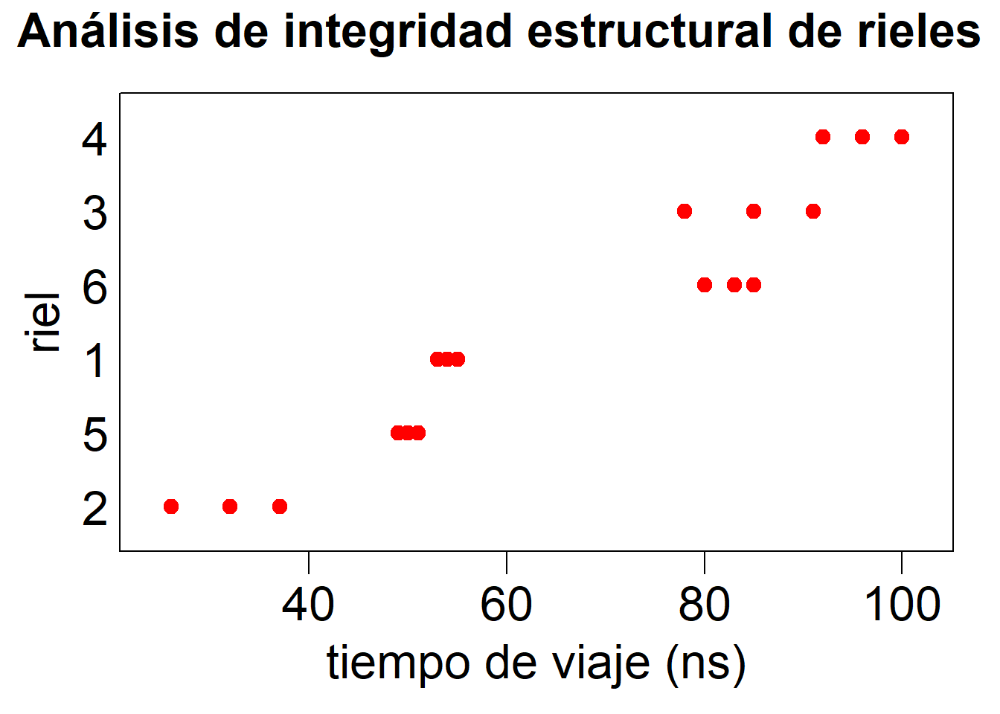
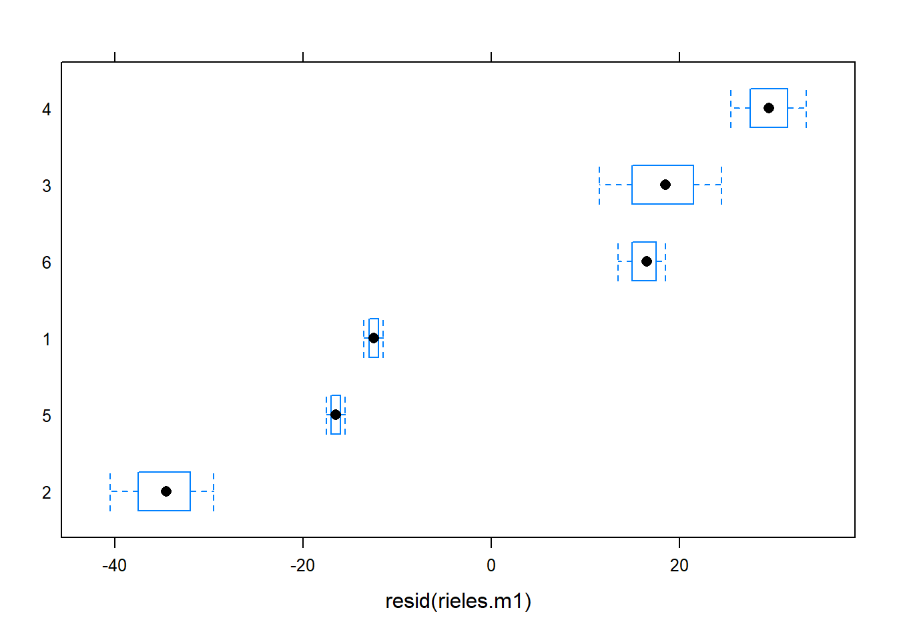
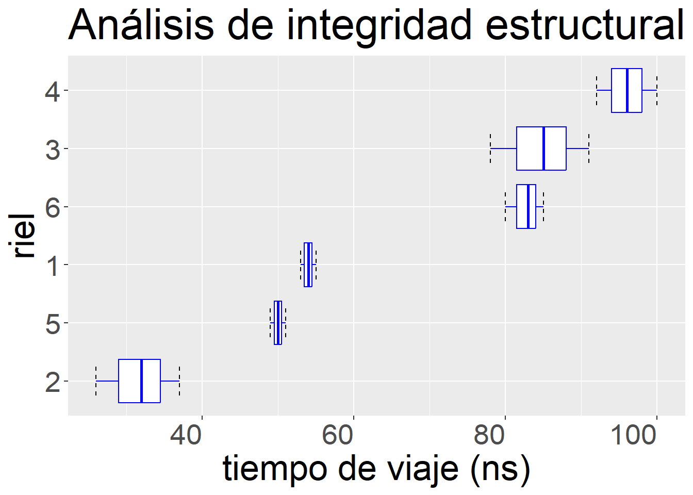
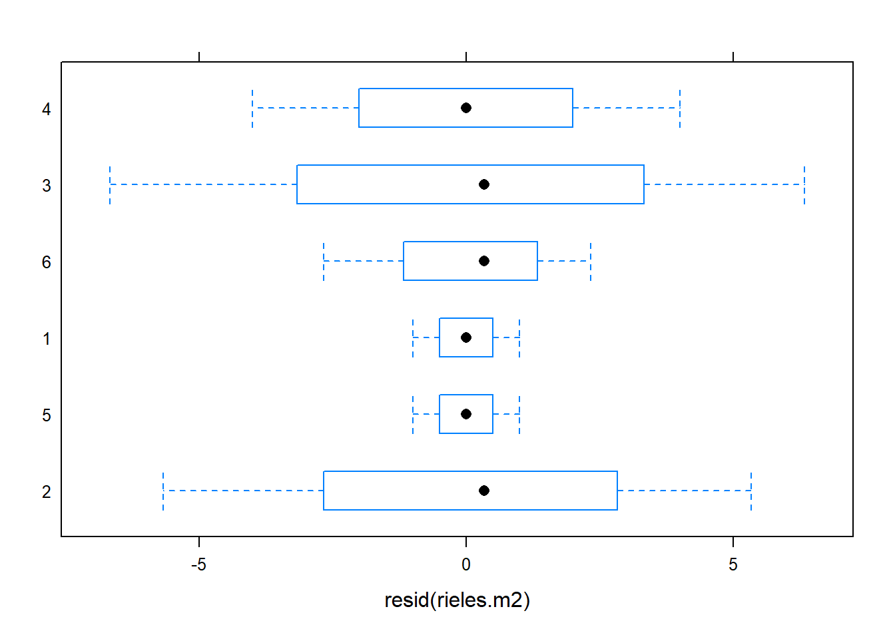
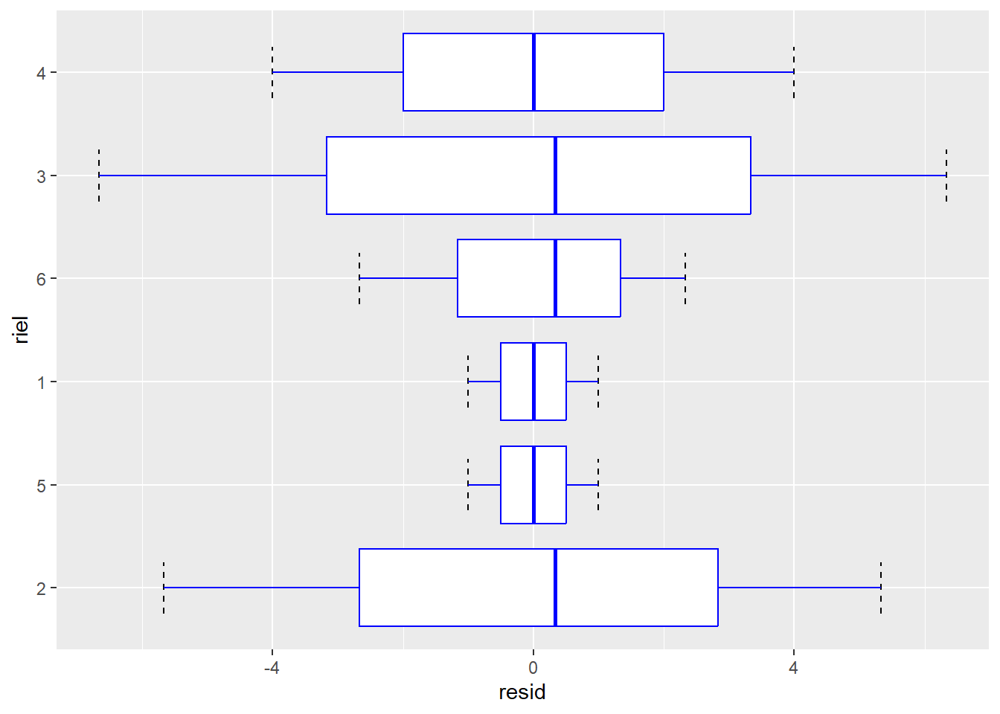
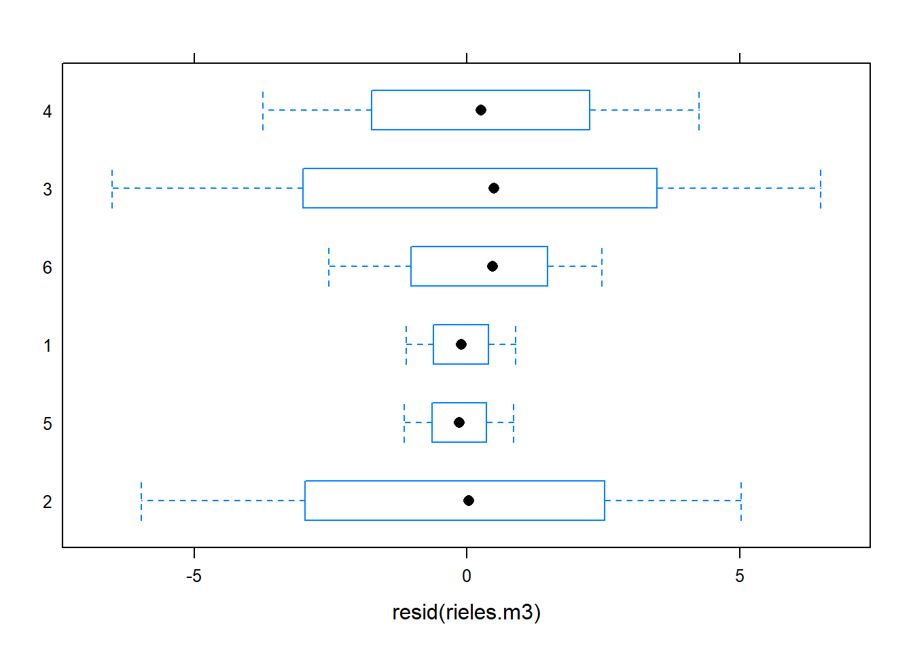
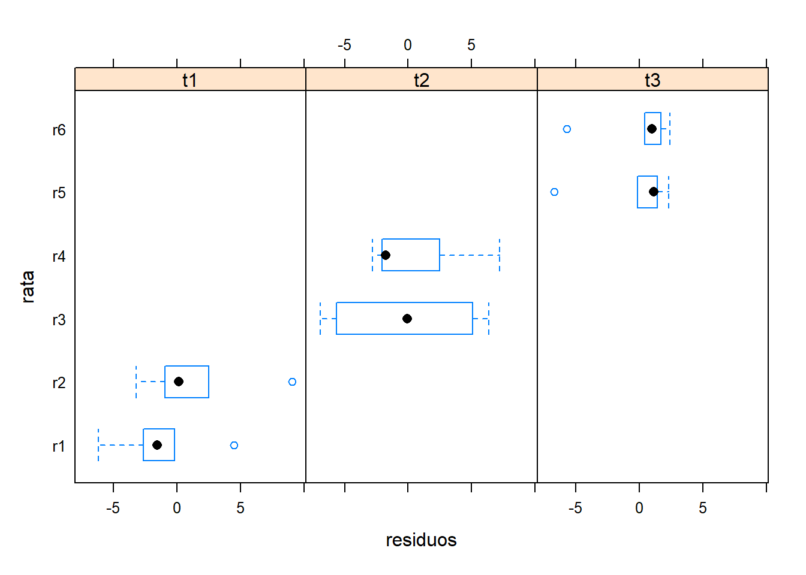

Es un ejemplo simple de efectos aleatorios que considera los datos de un estudio de medición no destructiva de la resistencia a la tensión de rieles de ferrocarril. Seis rieles fueron tomados al azar y sometidos a prueba tres veces cada uno a través de la medición del tiempo que le toma a cierto tipo de ondas ultrasónicas viajar a lo largo del riel. La Única condición experimental que cambia entre observaciones es el riel.
Claramente el estudio tiene un solo criterio de clasificación, como condición de contraste. La intención del estudio fue la determinación de: 1. Tiempo de tránsito “típico” de un riel (tiempo esperado de tránsito) 2. Variacián en el tiempo de tránsito promedio entre los rieles (variabilidad entre rieles) 3. Variación en el tiempo observado de tránsito de un riel dado (variabilidad dentro de rieles)
Lo primero que haremos es preparar las bibliotecas que utilizaremos. En este caso nlme para ajustar los modelos de efectos mixtos y lattice aunque también podría usarse ggplot2 para hacer las gráficas.
Lattice contiene estas opciones:
tipo de gráfica
descripción
ejemplo de fórmula
barchart
bar chart
x~A or A~x
bwplot
boxplot
x~A or A~x
cloud
3D scatterplot
z~x*y|A
contourplot
3D contour plot
z~x*y
densityplot
kernal density plot
~x|A*B
dotplot
dotplot
~x|A
histogram
histogram
~x
levelplot
3D level plot
z~y*x
parallel
parallel coordinates plot
data frame
splom
scatterplot matrix
data frame
stripplot
strip plots
A~x or x~A
xyplot
scatterplot
y~x|A
wireframe
3D wireframe graph
z~y*x
Las gráficas con lattice tienen todo un entorno de soporte. Por ejemplo los aspectos que pueden ajustarse se pueden ver con trellis.par.get() y se ajustan con trellis.par.set(). Actualmente, resulta quizás más práctico el enfoque que ha desarrollado ggplot2.
los datos están en la tabla riel de la biblioteca nlme. La copiamos al espacio de de trabajo y los asigno a una variable con un nombre de mi gusto. Los datos de los rieles están ordenados según fueron ensayados.
La tabla rieles fue creada como una estructura agrupada con la función groupeData de la biblioteca nlme. Veremos más adelante como usar esta función. Esta funnción agrega metadatos a la tabla. Si interesa hacer cambios a los metadatos de la tabla agrupada hay que usar la función update que ejemplificaré a continuación. Lo primero es explorar los atributos asignados.
Ahora cambiemos estos atributos para que todo esté expresado en español y de paso corregir la fórmula, que tal como está, pierde la referencia adecuada a las variables que contiene la tabla, pues cambiamos los nombres de las variables.
Código
rieles <-update(rieles, formula = viaje ~1| riel,labels =list(y ="Tiempo de viaje con fuerza cero"),units =list(y ="(nano segundos)"))attributes(rieles)
A esta tabla se le ha aplicado la función groupedData con la fórmula:
viaje ~ 1| riel
Esta estrategia permite darle mantenimiento a los metadatos, que incluyen indicaciones sobre el agrupamiento de los datos en la tablas. Para aprovechar esta estructura podemos usar funciones especiales, por cierto, dentro del paquete nmle, la función plo ha sido diseñada para usar opciones de graficación de latice, puedes averiguar un poco más al respecto con help(plot.nmGroupedData):
gapply - aplica funciones por grupos
gsummary - calcula los resúmenes de datos por grupos
Por lo pronto veamos los datos, con la función de graficación de latticestripplot, que toma el factor riel, por lo tanto se trata de renglones cualitativos sobre los que se grafican los datos de velocidad de viaje.
Código
options(repr.plot.width=10, repr.plot.height=6)stripplot(rieles$riel ~ rieles$viaje, pch =19, col ="red", cex =1.25,main =list(label ="Análisis de integridad estructural de rieles", cex =2),xlab =list(label ="tiempo de viaje (ns)", cex =2),ylab =list(label ="riel", cex =2), scales =list(tck =c(2,0), x =list(cex =2), y =list(cex =2)))

¿Cómo se ven estos datos? ¿qué piensas que habría que hacer?
Código
ggplot(rieles, aes(x = viaje, y = riel, group = riel)) +geom_point(shape =19, size =4, color ="blue") +labs(title ="Análisis de integridad estructural de rieles") +xlab(label ="tiempo de viaje (ns)") +ylab(label ="riel") +theme(text =element_text(size=26), axis.text.x =element_text(angle=0, hjust=1))
¿Cómo se asigna la estructura de agrupación a una tabla de datos? Como dije al principio, se puede usar la función groupedData de la biblioteca nlme. Hagamos un ahora un ensayo de este proceso.
Código
rieles.sg <-as.data.frame(rieles)
Estructura de la tabla sin información de agrupamiento:
Estructura de la tabla con información de agrupamiento:
Código
rieles.g <-groupedData (viaje ~1| riel, data = rieles.sg, FUN = mean,units =list( x ="(ns)"),labels =list(x ="riel", y ="tiempo de tránsito de fuerza cero"))str(rieles.g)
Primera posibilidad de análisis. Modelo lineal simple. Es una elección natural en este caso, pues estima la media general. Hay que recordar seleccionar contrastes de tipo “tratamiento” aun para factores ordenados.
¿Cómo representamos al riel en el modelo?
Código
options ()$contrasts
unordered ordered
"contr.treatment" "contr.poly"
Empecemos por construir el modelo nulo. ¿qué resultados nos ofrece este modelo?.
Código
rieles.m1 <-lm(viaje ~1, data =rieles.g)summary(rieles.m1)
Call:
lm(formula = viaje ~ 1, data = rieles.g)
Residuals:
Min 1Q Median 3Q Max
-40.50 -16.25 0.00 18.50 33.50
Coefficients:
Estimate Std. Error t value Pr(>|t|)
(Intercept) 66.500 5.573 11.93 1.1e-09 ***
---
Signif. codes: 0 '***' 0.001 '**' 0.01 '*' 0.05 '.' 0.1 ' ' 1
Residual standard error: 23.65 on 17 degrees of freedom
Así, tengo una estimación del tiempo promedio de tránsito de: 66.5. El error estándar que estimo es: 5.573
¿cómo quedan los residuos de este modelo?
El gráfico de cajas y bigotes o cajas y alambres es interesante para explorar lo que está pasando con los rieles. La versión que produce la función bwplot() de la biblioteca lattice es un buen recurso.
¿Qué piensas de esta gráfica? ¿Te gusta lo que ves?
Código
bwplot(rieles.g$riel ~resid(rieles.m1))

Código
ggplot(rieles.g, aes(x = viaje, y = riel, group = riel)) +stat_boxplot(geom='errorbar', linetype=2, width=0.5) +geom_boxplot(shape =19, size =0.5, color ="blue") +labs(title ="Análisis de integridad estructural de rieles (rieles.g)") +xlab(label ="tiempo de viaje (ns)") +ylab(label ="riel") +theme(text =element_text(size=26), axis.text.x =element_text(angle=0, hjust=1))

Al ignorar el efecto de los rieles, dentro de los que repito la prueba para obtener las medidas de interés se produce un defecto que se ve claramente en esta gráfica de residuos.
Los residuos de cada riel tienen todos el mismo signo. Es decir se mantiene un efecto sistemático importante en ellos.
Te parecería buena idea agregar el término que representa al riel para resolver este problema?
¿Es fijo o aleatorio?
Este nuevo modelo permite que cada riel sea representado por una media diferente. Suponiendo efectos fijos, la estimación del parámetro de interés es esta.
Código
rieles.m2 <-lm(viaje ~ riel -1, data =rieles.g)rieles.m2
Analysis of Variance Table
Response: viaje
Df Sum Sq Mean Sq F value Pr(>F)
riel 6 88911 14818.5 916.61 2.971e-15 ***
Residuals 12 194 16.2
---
Signif. codes: 0 '***' 0.001 '**' 0.01 '*' 0.05 '.' 0.1 ' ' 1
Código
summary(rieles.m2)
Call:
lm(formula = viaje ~ riel - 1, data = rieles.g)
Residuals:
Min 1Q Median 3Q Max
-6.6667 -1.0000 0.1667 1.0000 6.3333
Coefficients:
Estimate Std. Error t value Pr(>|t|)
riel2 31.667 2.321 13.64 1.15e-08 ***
riel5 50.000 2.321 21.54 5.86e-11 ***
riel1 54.000 2.321 23.26 2.37e-11 ***
riel6 82.667 2.321 35.61 1.54e-13 ***
riel3 84.667 2.321 36.47 1.16e-13 ***
riel4 96.000 2.321 41.35 2.59e-14 ***
---
Signif. codes: 0 '***' 0.001 '**' 0.01 '*' 0.05 '.' 0.1 ' ' 1
Residual standard error: 4.021 on 12 degrees of freedom
Multiple R-squared: 0.9978, Adjusted R-squared: 0.9967
F-statistic: 916.6 on 6 and 12 DF, p-value: 2.971e-15
¿interpretación de este nuevo resultado?
……….. ¿y los residuos? ¿cómo se ven ahora?
Código
bwplot(rieles.g$riel ~resid(rieles.m2))

Código
res.m2 <-data.frame(resid =resid(rieles.m2), riel = rieles.g$riel)ggplot(res.m2, aes(x = resid, y = riel, group = riel)) +stat_boxplot(geom='errorbar', linetype=2, width=0.5) +geom_boxplot(shape =19, size =0.5, color ="blue")

A pesar de que el modelo remueve los efectos sistemáticos asociados a las características particulares de los distintos rieles, no proporciona una representación satisfactoria del problema.
si los rieles son de efectos fijos ¿qué implica este modelo? ¿qué sería el tratamiento riel?_
Al suponer efectos fijos surge el problema de que se modelan de algún modo variantes individuales de los rieles que se usaron para realizar las pruebas. Desafortunadamente, tal clasificación no tiene ningún sentido en el contexto. Lo que interesa es estimar el tiempo de tránsito típico de cualquier riel en la población de rieles de la que se tomó la muestra.
Además, la misma falta de correspondencia conceptual entre el modelo y la estimación que interesa, hace que este nuevo modelo no proporcione una clara estimación de la variación (componente de varianza), entre rieles, que es otra de las preguntas centrales de este estudio. Otro problema de este modelo de efectos fijos es que el número de parámetros crece linealmente con el número de rieles que se usan para realizar la prueba, generando un comportamiento extraño en el modelo respecto de la pregunta.
El Modelo de efectos aleatorios ¿resuelves estos problemas?.
En este enfoque se considera a los rieles como un efecto aleatorio sobre la media general. Hay principalmente dos métodos para ajustar este tipo de modelos el de máxima verosimilitud (ML) y el de máxima verosimilitud restringida (REML, default). La función que utilizaremos para el caso lineal es lme() que se usa de modo muy semejante a lm() y glm(). Sin embargo, nótese que ahora el modelo tiene dos grupos de fórmulas, una para describir los efectos fijos (opción fixed) y otra para describir los aleatorios (opción random). Esté último es siempre una fórmula que tiene sólo el lado derecho (no hay interés en predecir medias, ¿recuerdas?) y da cuenta de los efectos aleatorios y de la estructura de agrupamiento de los datos. Un agrupamiento se representa mediante el símbolo de barra vertical: |. Ahora, ajustemos un modelo de este tipo para obtener la estimación de máxima verosimilitud restringida para los rieles.
Código
rieles.m3 <-lme(fixed = viaje ~1, random =~1| riel, data = rieles.g)rieles.m3
Linear mixed-effects model fit by REML
Data: rieles.g
Log-restricted-likelihood: -61.0885
Fixed: viaje ~ 1
(Intercept)
66.5
Random effects:
Formula: ~1 | riel
(Intercept) Residual
StdDev: 24.80547 4.020779
Number of Observations: 18
Number of Groups: 6
Ayudame a comentar estos resultados ¿qué te llama la atención?
Código
summary (rieles.m3)
Linear mixed-effects model fit by REML
Data: rieles.g
AIC BIC logLik
128.177 130.6766 -61.0885
Random effects:
Formula: ~1 | riel
(Intercept) Residual
StdDev: 24.80547 4.020779
Fixed effects: viaje ~ 1
Value Std.Error DF t-value p-value
(Intercept) 66.5 10.17104 12 6.538173 0
Standardized Within-Group Residuals:
Min Q1 Med Q3 Max
-1.61882658 -0.28217671 0.03569328 0.21955784 1.61437744
Number of Observations: 18
Number of Groups: 6
El ajuste produce los estimadores que buscamos: 1. tiempo de tránsito típico = 66.5 2. Variabilidad entre rieles = 24.81 3. Variabilidad dentro de rieles = 4.02
En este caso los estimadores 1 y 3 son prácticamente idénticos a los obtenidos con el modelo lineal ordinario, pero esto no siempre es así. La coincidencia deriva de que la muestra está balanceada (mismo tamaño de muestra en cada riel). Además, ahora tengo un razonable estimador de la variación entre rieles (2).
¿Qué utilidad pueden tener estas estimaciones?
El resumen del ajuste muestra dos criterios nuevos para comparar y evaluar modelos. Estas medidas son resultado de la búsqueda de alternativas para valorar modelos que no se centre en el famoso valor de p.
AIC - Criterio de información de Akaike = -2 * logVerosimilitud + 2 numParámetros
Es bueno contar con ellos para comparar la calidad general de los modelos ajustados, pero no olviden que centrar nuestra atención en los intervalos de confianza es más informativo y potencialmente interesante.
En cualquier caso, “entre más pequeño el valor del criterio, mejor”, pero no olvides que más interesantes son los intervalos de confianza que obtengas.Finalmente, veamos los residuos
¿Cómo se ven?
¿Qué nos sugieren estos resultados?
Código
bwplot(rieles.g$riel ~resid(rieles.m3))

Puedo obtener los estimadores de los coeficientes igual que en el caso lm() y glm() con coef(), pero además puedo obtener los coeficientes de los componentes aleatorios con random.effects() (forma breve: ranef()). ¿Que hay de los intervalos de confianza de los parámetros de efectos fijos estimados?.
Como he venido insistiendo, esta forma de mostrar resultados es cada vez más apreciada y es más conveniente que el enfoque de uso de valores de “p” en las publicaciones. La función intervals() supone un nivel de confianza del 95%, si no se le dice otra cosa.
¿Qué piensas de estos estimadores de intervalos de confianza?
Código
intervals(rieles.m3, 0.95)
Approximate 95% confidence intervals
Fixed effects:
lower est. upper
(Intercept) 44.33921 66.5 88.66079
Random Effects:
Level: riel
lower est. upper
sd((Intercept)) 13.27434 24.80547 46.35341
Within-group standard error:
lower est. upper
2.695007 4.020779 5.998747
El modelo de glucógeno en ratas revisitado
Volvamos a ver el ejemplo GLEX38 (Crawley p. 149) de Hígados de rata en el ejemplo presentado originalmente en Sokal & Rohlf (1981). Te recuerdo que se trata de un experimento con un solo factor con tres tratamientos administrados a seis ratas, dos por tratamiento. El análisis se complica por el hecho de que, para el an?lisis, se tomaron tres muestras del hígado de cada rata y se hicieron dos determinaciones de contenido de glucógeno en cada muestra. Así, podríamos decir, un tanto derogativamente, que hay seis pseudoréplicas por rata para dar un total de 36 lecturas en total. Pero quizás en lugar de hablar en estos términos deberíamos simmplemente reconocer que lo que estamos haciendo es organizar un muestreao para obtener el dato de la variable de respuesta en el experimento, en lugar de hacer una “cosecha total”, que es la práctica ideal (pues evita introducir un fuente de “ruido” adicional).
Veamos el enfoque con un modelo lineal de efectos mixtos.
¿Cual es la estructura fija?, me puedes decir cuál es la ecuación correspondiente
La estructura aleatoria de los datos, cuando tiene varias fuentes, se representa como una lista de efectos (modelos) en la función lme() de la biblioteca nlme. Otra posibilidad es usar la biblioteca lme4 que contiene a la función lmer(). Al respecto, esta lectura puede ser de innterés
Este caso, como ya vimmos, hay dos cosas en operación: 1. Hay una muestra aleatoria de ratas distintas en cada tratamiento. Cabe esperar un valor promedio de glucógeno distinto para cada animal. Esto lo representaré en el primer componente de la lista. 2. Hay una muestra aleatoria de fragmentos de hígado tomados de cada rata. Esperamos que estas muestras estimen una misma cantidad de glucógeno para cada animal. Esto lo representaré en el segundo componente de la lista.
En el código siguiente tanto el modelo “1” como el “2” son equivalente. Los presento como dos formas de plantear el modelo de efectos aleatorios. Hay que notar que no es correcto hacer comparaciones entre modelos que cambian en cuanto al componente “fijo” si el ajuste se hace mediante el método “REML”, en caso de tener hipótesis de interés en esta parte del modelo hay que emplear el método “ML”.
Linear mixed-effects model fit by REML
Data: ratas_g
AIC BIC logLik
231.6213 240.6003 -109.8106
Random effects:
Formula: ~1 | rata
(Intercept)
StdDev: 6.005399
Formula: ~1 | muestraH %in% rata
(Intercept) Residual
StdDev: 3.763863 4.600725
Fixed effects: glucogeno ~ tratamiento - 1
Value Std.Error DF t-value p-value
tratamientot1 140.5000 4.707166 3 29.84811 1e-04
tratamientot2 151.0000 4.707166 3 32.07875 1e-04
tratamientot3 135.1667 4.707166 3 28.71509 1e-04
Correlation:
trtmn1 trtmn2
tratamientot2 0
tratamientot3 0 0
Standardized Within-Group Residuals:
Min Q1 Med Q3 Max
-1.48211987 -0.47263005 0.03061539 0.42934293 1.82934636
Number of Observations: 36
Number of Groups:
rata muestraH %in% rata
6 18
Código
ratas.lme.m2 <-lme(fixed = glucogeno ~ tratamiento -1, random =~1| rata / muestraH,data=ratas_g) summary(ratas.lme.m2)
Linear mixed-effects model fit by REML
Data: ratas_g
AIC BIC logLik
231.6213 240.6003 -109.8106
Random effects:
Formula: ~1 | rata
(Intercept)
StdDev: 6.005399
Formula: ~1 | muestraH %in% rata
(Intercept) Residual
StdDev: 3.763863 4.600725
Fixed effects: glucogeno ~ tratamiento - 1
Value Std.Error DF t-value p-value
tratamientot1 140.5000 4.707166 3 29.84811 1e-04
tratamientot2 151.0000 4.707166 3 32.07875 1e-04
tratamientot3 135.1667 4.707166 3 28.71509 1e-04
Correlation:
trtmn1 trtmn2
tratamientot2 0
tratamientot3 0 0
Standardized Within-Group Residuals:
Min Q1 Med Q3 Max
-1.48211987 -0.47263005 0.03061539 0.42934293 1.82934636
Number of Observations: 36
Number of Groups:
rata muestraH %in% rata
6 18
Para comparar el efecto del tratamiento hay que usar el método “ML” y ajustar los modelos que contrastan la hipótesis de interés en el componente fijo.
Linear mixed-effects model fit by maximum likelihood
Data: ratas_g
Log-likelihood: -119.8834
Fixed: glucogeno ~ 1
(Intercept)
142.2222
Random effects:
Formula: ~1 | rata
(Intercept)
StdDev: 7.561272
Formula: ~1 | muestraH %in% rata
(Intercept) Residual
StdDev: 3.763863 4.600725
Number of Observations: 36
Number of Groups:
rata muestraH %in% rata
6 18
Linear mixed-effects model fit by maximum likelihood
Data: ratas_g
Log-likelihood: -116.6353
Fixed: glucogeno ~ tratamiento
(Intercept) tratamientot2 tratamientot3
140.500000 10.500000 -5.333333
Random effects:
Formula: ~1 | rata
(Intercept)
StdDev: 3.72915
Formula: ~1 | muestraH %in% rata
(Intercept) Residual
StdDev: 3.763793 4.600775
Number of Observations: 36
Number of Groups:
rata muestraH %in% rata
6 18
Así podemos comparar el análisis con modelos mixtos y el convencional en cuanto al efecto del tratamiento.
Código
anova(ratas.lme.m4, ratas.lme.m3)
Model df AIC BIC logLik Test L.Ratio p-value
ratas.lme.m4 1 6 245.2705 254.7716 -116.6353
ratas.lme.m3 2 4 247.7667 254.1008 -119.8834 1 vs 2 6.496197 0.0388
Es importante contar con intervalos de confianza para describir de mmejor manera los resultados obtenidos. La forma de hacerlo para cada tipo de modelo pude varia, así que ilustraré un par de rutas para obtenerlos.
Modelo de efectos mixtos: lme
Código
ratas.lme4.ic <-predict(ratas.lme.m4, level =0, type ="predict")
min media max
t1 133.6653 140.5000 147.3347
t2 144.1653 151.0000 157.8347
t3 128.3319 135.1667 142.0014
Bueno, veamos los residuos!!!
Código
plot(ratas.lme.m4, rata ~resid(.) | tratamiento, xlab="residuos")
Código
plot(ratas.lme.m4)

Comparaciones múltiples
Veamos qué está pasando con los efectos de los tratamientos una vez que hemos resuelto con la prueba omnibus que hay algún efecto de tratamiento.
El modelo completo, ¿cambia significativamente al recodifcar los tratamientos de manera que supongamos que el t1 no difiere del t2? Esto equivale a comparar los dos mmodelos respectivos.
Este modelo sugiere que es posible argumentar que el tratamiento combinando t1 y t3 difiere en forma apreciable o significativa con respecto del t2. Esto se aprecia al considerar los valores promedio de los tratamientos, pero no es realmente muy evidente. La forma como estoy calculando los valores tiene que considerar el tipo de reparametrización y la configuración del modelo, no olvides eso.
Rows: 32 Columns: 3
── Column specification ────────────────────────────────────────────────────────
Delimiter: ","
chr (2): Individual, Hand
dbl (1): Length
ℹ Use `spec()` to retrieve the full column specification for this data.
ℹ Specify the column types or set `show_col_types = FALSE` to quiet this message.
Código
manos.lme <-lme(fixed= Length ~ Hand -1, random=list(Individual =~1),data=manos)manos.lme
Linear mixed-effects model fit by REML
Data: manos
Log-restricted-likelihood: -36.31293
Fixed: Length ~ Hand - 1
HandLeft HandRight
17.35625 17.59375
Random effects:
Formula: ~1 | Individual
(Intercept) Residual
StdDev: 1.950137 0.1981163
Number of Observations: 32
Number of Groups: 16
Código
anova(manos.lme)
numDF denDF F-value p-value
Hand 2 15 644.8337 <.0001